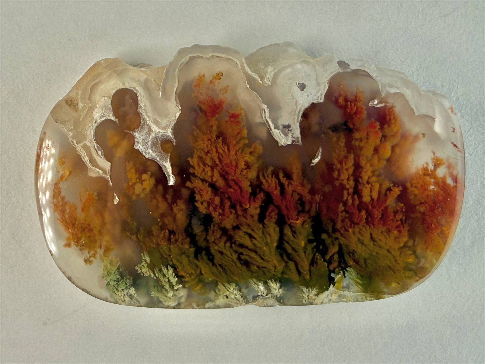
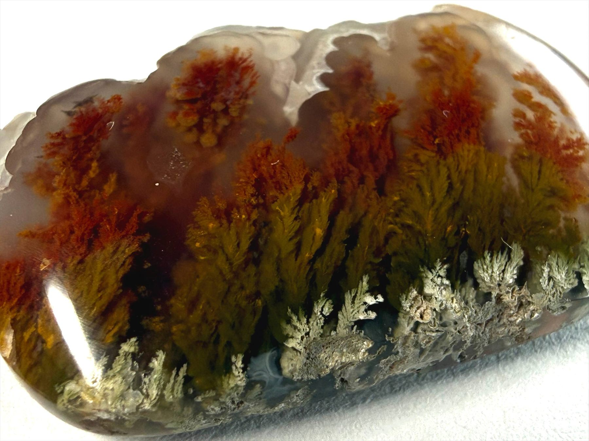
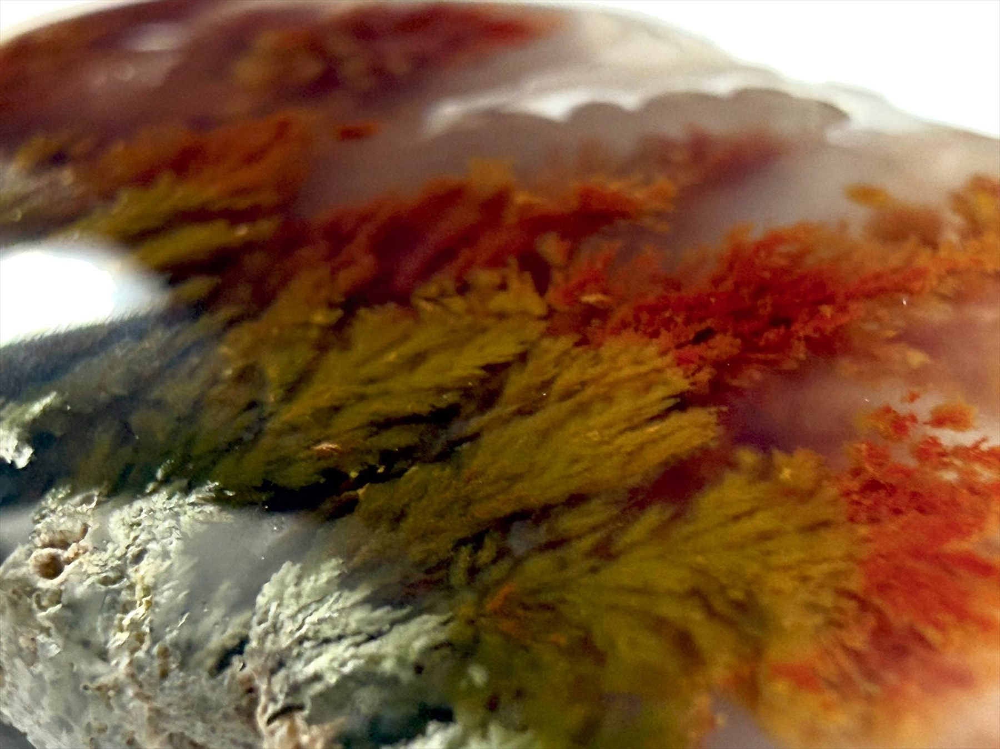
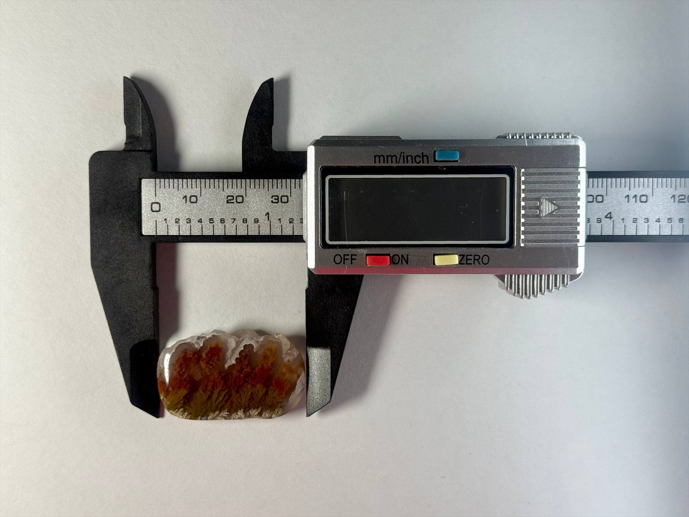

Certificate available on request
Certificate available on request
Autumn Flame Panorama is a rare dendritic agate with a wide scene of fiery reds and deep moss-green formations, rising like dense autumn forests against clear chalcedony. Each branch-like inclusion is completely natural and sharply defined, creating the feeling of a panoramic landscape inside the stone. A singular piece for collectors who look for strong colour and structure rather than repetition.




